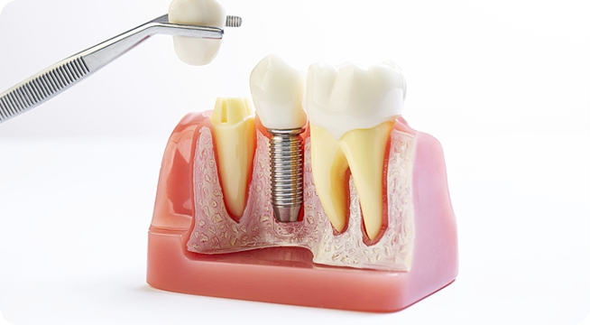

임플란트 수술 후 주의사항 4
썩지 않는 치아라고 해서 임플란트가 영구적이라 생각하면 큰 오산입니다. 평소에 얼마나 관리를 잘 하느냐에 따라서 임플란트의 수명이 좌우됩니다. 어떻게 하면 임플란트를 효과적으로 잘 관리할 수 있을까요?
-
양치질을 구석구석 꼼꼼하게
임플란트 자체는 썩지 않지만 그 주변 잇몸에 염증이 생길 수 있습니다. 칫솔이 닿지 않는 부위는 치실이나 치간칫솔을 이용하여 임플란트와 임플란트 사이, 임플란트와 자연치 사이의 공간을 깨끗이 닦아내야 합니다.
-
음식을 씹을 때 특별히 조심
임플란트는 견고하나 인공 뿌리를 잇몸에 심어 넣은 것이기 때문에 자연치처럼 충격을 흡수하는 조직이 없어 무리한 충격이 가해지면 곧바로 잇몸뼈에 이상이 생길 수 있습니다. 그러므로 시술 직후에는 부드러운 음식을 먹고, 이후에도 오징어와 같이 질기고 단단한 음식을 자제합니다.
-
최소 6개월에 한 번씩 정기 검진
임플란트에는 신경이 없으므로 문제가 발생해도 통증이 없어 그냥 간과하기 쉽습니다. 이상이 없는지 임플란트 상태 확인을 위해 정기 검진을 받는 것이 현명합니다.
-
담배를 끊기
흡연자의 경우 골융합이 잘 되지 않아 임플란트 실패율이 비흡연자보다 10배나 높습니다. 시술 받기 전부터 금연하고 시술 후에도 흡연을 자제해야 합니다.